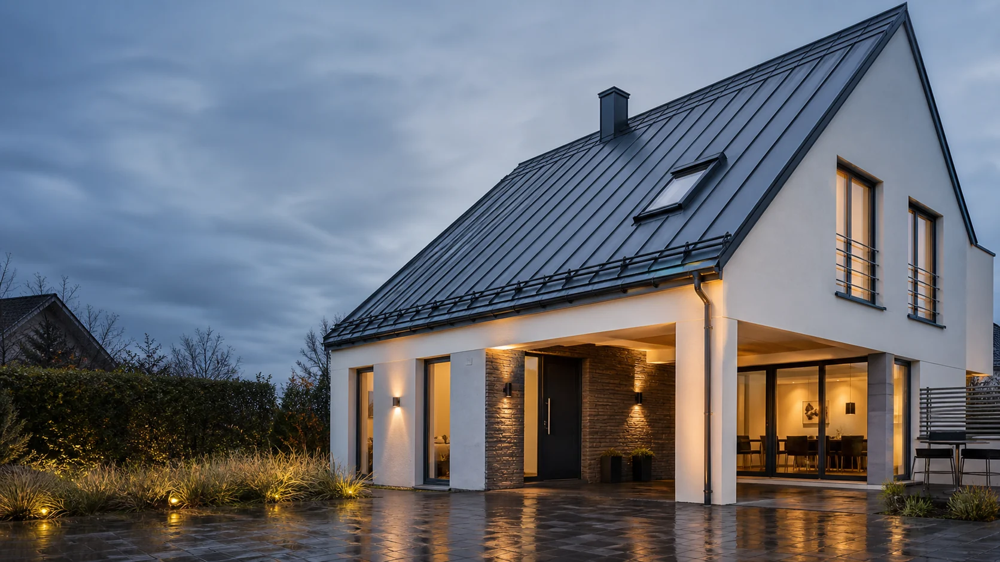
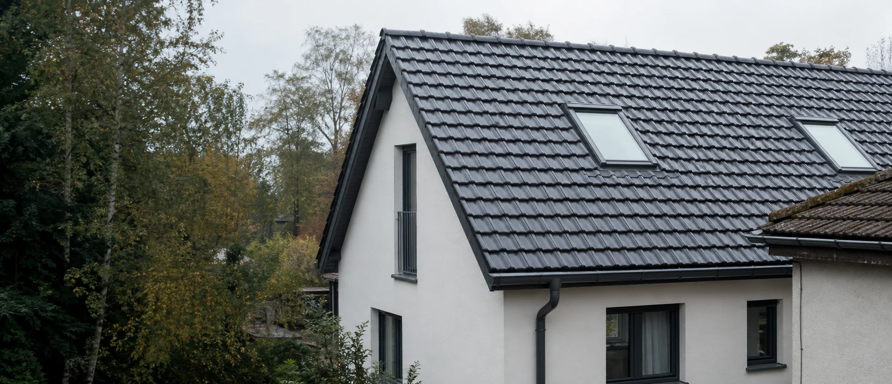

Klar beraten
Sie verstehen jede Entscheidung, bevor wir sie umsetzen.

Wir planen, bauen und erhalten Dächer, die heute überzeugen — und morgen noch Bestand haben.
Erstberatung starten ↗Es beginnt mit Zuhören, präziser Planung und einer ehrlichen Einschätzung dessen, was Ihr Gebäude wirklich braucht.
Wir verbinden meisterliches Handwerk mit technischem Denken — für Lösungen, die langfristig funktionieren.
Sie verstehen jede Entscheidung, bevor wir sie umsetzen.
Details, Anschlüsse und Abläufe werden vorab durchdacht.
Material und Ausführung folgen dem gesamten Lebenszyklus.
Ein Dach ist kein einzelnes Bauteil. Es ist ein abgestimmtes System. Erkunden Sie, was jede Ebene leistet.
Lasten sicher aufnehmen und präzise in das Gebäude ableiten.
Von der kompletten Dachlösung bis zur gezielten Instandhaltung: Wir denken jedes Projekt im Zusammenhang.

Von der energetischen Sanierung bis zum Neubau: technisch sauber geplant, handwerklich präzise ausgeführt und passend zur Architektur Ihres Hauses.
Leistung entdecken ↗Wählen Sie die Situation, die Ihrem Anliegen am nächsten kommt. Wir führen Sie direkt zur passenden Anfrage.
Undichtigkeiten, lose Bauteile oder Spuren nach einem Sturm sollten zeitnah geprüft werden.
Schaden melden ↗ 02Eine Dachsanierung kann Schutz, Wohnkomfort und Energieeffizienz gemeinsam verbessern.
Sanierung anfragen ↗ 03Entwässerung und Abdichtung müssen als System geprüft werden, bevor Folgeschäden entstehen.
Flachdach prüfen lassen ↗ 04Gut geplante Dachfenster schaffen Tageslicht, Lüftung und einen spürbar besseren Raumkomfort.
Tageslicht planen ↗
Ein fester Ansprechpartner führt Sie durch alle sechs Phasen — von der Anfrage bis zur dokumentierten Übergabe.
Wir klären Ziel, Zustand und Rahmen Ihres Vorhabens.
Aufmaß, Substanzprüfung und technische Bestandsaufnahme.
Nachvollziehbare Lösung mit Varianten und klaren Kosten.
Koordinierte Ausführung, saubere Baustelle, laufende Updates.
Details, Anschlüsse und Funktionen werden systematisch kontrolliert.
Sie erhalten eine klare Übergabe und wissen, wie Ihr Dach langfristig erhalten bleibt.
Was Eigentümer vor einer Dachsanierung wissen möchten.
Wenn Eindeckung, Abdichtung oder Anschlüsse ihre Funktion verlieren, die Dämmung nicht mehr zeitgemäß ist oder wiederholt Feuchtigkeit auftritt. Wir prüfen zuerst, welche Maßnahmen tatsächlich erforderlich sind.
Das hängt von Fläche, Aufbau, Material, Details und Zugänglichkeit ab. Nach der Vor-Ort-Analyse erhalten Sie ein transparent gegliedertes Angebot mit sinnvollen Varianten.
Ein typisches Einfamilienhaus benötigt je nach Umfang etwa zwei bis acht Wochen. Witterung und Sonderdetails werden bereits in der Terminplanung berücksichtigt.
Energetische Maßnahmen können je nach aktueller Förderlage unterstützt werden. Wir zeigen, welche technischen Nachweise für Ihr Vorhaben relevant sind.
Sichern Sie den Gefahrenbereich, vermeiden Sie eigene Arbeiten auf dem Dach und dokumentieren Sie sichtbare Schäden mit Fotos. Über „Schaden melden“ können Sie Dringlichkeit und Bilder direkt übermitteln.
Der Schwerpunkt liegt auf Köln und der umliegenden Region. Ob Ihr Projekt im Einsatzgebiet liegt, klären wir direkt mit Ihrer Anfrage.
In drei kurzen Schritten erfassen wir die wichtigsten Projektdaten. So kann Pierre Meyer direkt mit einer fundierten ersten Einschätzung reagieren.